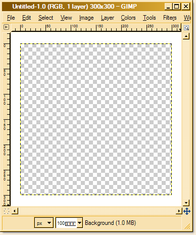
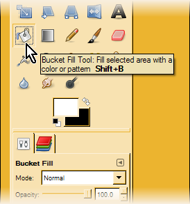
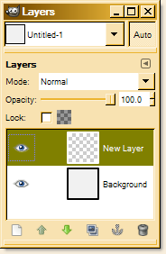
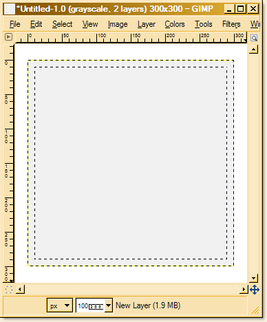
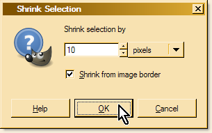
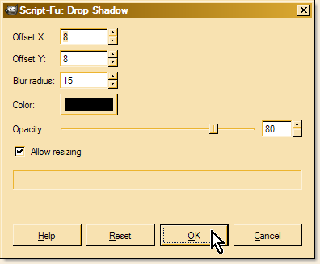
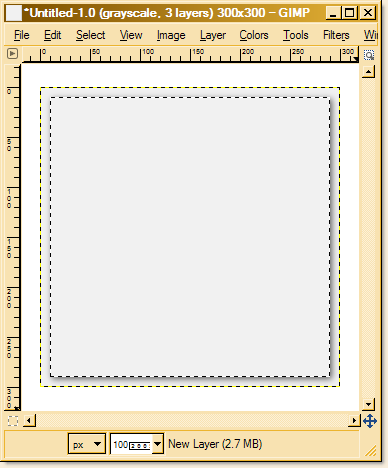
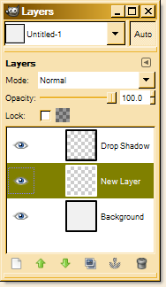

Are complex CSS issues making your programmers crazy?
I've provided advanced CSS consulting for
Milo  and many other big sites.
and many other big sites.
Hire me to help you too.
Big John's CSS Webinars!
Let Big John (yours truly) teach you about CSS in a setting where you can actually ask questions. Will wonders never cease? Learn about the cascade and its arcane mysteries, or dive into the cesspool of IE6 with Big John as your lifeguard.
Besides upcoming webinar dates, you can also download recorded versions of previous webinars (some free, some for sale).
Return to Articles.
Return to p.i.e.
This tutorial was written due to popular demand. I owe special thanks to David Tiley for his strong encouragement and help improving this, my first foray into the world of graphics creation. Thanks Dave!
The Four Sided PNG Drop Shadows Method provides a way to place a large drop shadow or glow image onto a smaller box of any arbitrary size, and it works very well indeed. However, what that article doesn't provide is a step-by-step guide showing graphics novices how to go about making that large drop shadow. It's time to remedy the omission.
For this graphics tutorial I've decided to use Gimp, because of its universal availability and because Gimp is now a rather sophisticated graphics editor. Gimp is Open Source (free!) and is rapidly improving with a huge fan/user base, so its future is very bright. This tutorial assumes at least a basic familiarity with graphics editors in general, but does not assume that the reader is a guru.
Creating the Image

In Gimp's main window, go to File>New (Ctrl+N). In the New Image dialog, click on the Advanced Options expander to see all the options. Specify a width and height that will be larger than the maximum shadow you will need. This can be a difficult decision. If you make it too small then a large shadowed box might show a gap somewhere along the box edge, but making the shadow image very wide and tall leads to unnecessary bandwidth and load times. Luckily these shadow images are mostly full transparency so even a huge one is surprisingly small in file size. I've chosen 300px as the size for this demo, but more typically it would be 1000px or even larger.
If your shadow is to be entirely shades of gray, you can set the Color space field to "Grayscale" as I've done here. This makes the resulting PNG file about 40% smaller than if all the color channels were used. If the shadow is to have some color in it, make sure you leave the color space setting at "RGB color" or it won't be possible to do so.
The Fill with, Template, resolution, and Comment fields are fine with the default settings. The Reset button is handy for returning to the default settings if they've been changed and you can't remember what they were.
With everything set, click "OK" to create your image.
You should see a new window with a dashed line surrounding the new image. The checkerboard pattern is there to reveal the fact that the image is transparent. That checkerboard won't show up on the finished image so don't worry about it. The rulers seen along the left and top edges in the screenshot are a Gimp option I've chosen under: View>Show Rulers (Shift+Ctrl+R). You may find those rulers to be very handy for some kinds of graphics work. Notice how in the screenshot with the title bare text "Untitled-1.0" there's an asterisk before the file name? That's to show that the image hasn't been saved (or has unsaved changes).
I like to work with a solid light background to judge the shadows against, so let's go ahead and fill that image with some white. In the Toolbox Window, click the Bucket Fill Tool (Shift+B) to activate it, then click on the foreground swatch The little white rectangle overlapping the black one in the graphic) and set it to white. (click the double pointed arrow to switch the two colors) I actually prefer an off-white color so that the image stands out against the white image window background, so that's what I've done for the graphic images in this tutorial. Now left-click on your image directly and the image layer should fill with your chosen foreground color.
We don't want our finished shadow image to have that white color, so make a new layer to work on. This layer will contain the actual shadow which will become the finished production image. Go to Layer>New Layer (Shift+Ctrl+N). In the dialog leave all the defaults alone and click OK.
There should now be two layers showing in the Layers dialog (as shown) with the new layer highlighted. Make sure this layer is always highlighted from now on or you'll be working on that white background layer instead! Be aware that you can drag the layers in the Layers dialog past each other to change their stacking order and also temporarily hide them by clicking those little eyeball icons on the layer boxes. Go ahead and try it just for fun.
Gimp has a very flexible dialog/dock system, but it can take some getting used to. If you can't find the Layers dialog or any other dockable dialog, go to Windows>Dockable Dialogs for a complete button list of those dialogs. These "docks" are separate windows that can hold persistent dialogs such as Layers and History in a handy group format. To learn how dialogs are added to and removed from docks, see Dialogs and Docking in the Gimp online manual.
Shrinkage
The next step is to select the entire image and shrink that selection box by the amount you want for your drop shadow width. This width is critical to the Four Sided PNG Drop Shadows Method. The CSS for the method must be tailored to match the shrink length you will choose, but once you make the correct modifications to the code, any shadow width will work fine. Go to Select>All (Ctrl+A) and that should start the 'marching ants' going around your image.
Go to Select>Shrink (Alt+S>H) to bring up the Shrink Selection dialog.
The length value you choose will be the width of your shadow. I've picked 10px in this demo. For now don't worry about varying shadow widths on different sides, just make it as big as the widest shadow you will need.
Make sure the Shrink from image border checkbox is checked, or else the shrink action won't work. This seems to be true only when the entire image is selected. Otherwise you need to uncheck the box for it to work. Don't ask me why, I have no idea. That's just the way Gimp does it. Oh well.
Now you should be seeing something like the screenshot to the right, with a select box some distance inward from the image edge. Ignore the extra dashed line around the image edge, it has no actual effect. You can tell which is the real selection by the 'marching ants' effect on the inner line.
Be aware that the
Four Sided PNG Drop Shadows Method
requires that the image area outside the select box be the same size on all sides of the image.
It doesn't matter what kind of graphics you place in these side-areas. Shadows, border lines, transparency, whatever, as long as the distance
from the select box to the image edge is the same on all sides. Your content box (div.shadow-four) will end up with its
edge exactly aligned with the select box line, so any backgrounds or borders that you wish to have appear within the selected region
are best applied to div.shadow-four, not the main drop shadow image.
Also be aware that the width of this area outside the select box (taken as a px length value) must be doubled
and used as the px length values for all css lengths in the method except the relative shift offsets on
.shadow-four, which get the px length values without doubling, but as negative values of course.
Applying the Shadow

Here comes the fun part. To bring up the Drop Shadow dialog, go to:
Filters>Light and Shadow>Drop Shadow
The default values in this dialog need to be changed to match your desired drop shadow parameters.
Here's what the options do:
- Offset X and Offset Y ― Moves the overall shadow horizontally and vertically from its default centered position behind the shadowed select box.
- Blur radius ― Controls the width of the shadow extending outward from the select box
- Color ― Controls the color applied to the shadow (only gray allowed in grayscale).
- Opacity ― The slider sets the opacity of the shadow.
- Allow resizing ― If this is checked and the settings cause the added shadow to be larger than the image size, the image will be resized so it can contain the extra shadowing. If it's unchecked, the image remains the same size and any extra shadow gets clipped off.
If the Allow resizing checkbox is checked, the resulting shadows may enlarge your image on one or more sides, causing the PNG drop shadows method to work incorrectly. Generally you should always uncheck this box.
The procedure here is to try some settings, hit OK and see what results. Usually it's not quite what you want, so you then go to Edit>Undo (Ctrl+Z) and try again repeatedly until it's just right.
If you only want a simple shadow all around the select box, just set the offsets to zero and give the blur radius something close to 10px. It's not always necessary or desirable to exactly match the shrink length you use. For instance, if you set the opacity to a low level you can widen the blur radius quite a lot without apparent clipping. I suggest you play around with various settings to see what effects you can get.
For this demo I chose X and Y offsets of 2px, a blur radius of 10px, a color of black, and an opacity of 60%. Note that those positive offsets along with the blur radius would cause image enlargement at the right and bottom edges if the "Allow resizing" checkbox were checked, but I keep it unchecked so I won't have to manually clip that excess later. Note that the offsets may also be negative, pulling the shadow up and to the left instead of down and right.
Bring up the Drop Shadow dialog and insert the values as described, then hit OK.
Now the shadow is in place and looking mighty fine, but check out the title bar of the image window. Three layers? Where did that come from? Well, it so happens that Gimp creates a new layer called Drop Shadow when making a drop shadow and puts the actual shadow on that layer. Furthermore, this new layer is placed on top of the selected layer. It's not a problem but be aware that this is happening so you won't be confused by it.
By the way, you may rename any layer in the Layers dialog simply by double clicking the name and typing a new one. In the future when you're building hi-rise multi-layer images it'll be nice to have descriptive names on all of them, eh? Oh yes.
See that opacity slider in the Layers dialog? If you click on the Drop Shadow layer you can re-adjust the opacity of the shadow on-the-fly, fine tuning it to your exact desires. Sweet.
Saving the Image
Before you can save, make sure you go to the Layers dialog and click that eyeball icon on the Background layer. Doing that will kill the white background and reveal the checkerboard again. Now all is in readiness. To save the image, just go to File>Save As (Shift+Ctrl+S) and in the Save As dialog choose the location to save, and name the file too. You can get a Select File Type field by clicking the expander just above the Help button, but it's quicker to just type the .png extension on the file name.
When you hit the Save button, a new Export File dialog pops up. The reason for this is that your image has layers and the PNG format doesn't do layers (except for the proprietary Fireworks PNG format). This dialog will automatically compress the layers to a single layer for you. Make sure that the Merge Visible Layers radio button is selected. This will exclude the white background layer from the exported PNG because you just made it invisible by clicking the eyeball icon for that layer. Now hit the Export button.
Yet another box pops up (sigh), the Save as PNG dialog. Just uncheck all the checkboxes (unless you feel the need to check some of them) and keep the compression slider at the maximum level. Hit Save. Woohoo! You've finally got your excellent drop shadow image!
Extra Points
- If the goal is to make a 'glow' effect rather than a shadow, just invert all the color settings mentioned in the tutorial, including the white background on the bottom layer.
- It's a good idea to save the layered image as an .xcf file type. That's Gimp's proprietary format, and it will save all the layering and select information so that later on you may easily make different versions of your PNG shadow image without repeating all the steps.
- If you forgot to set the image to grayscale when you created it, just go to Image>Mode>Grayscale and you're good. Remember that a grayscale shadow cannot have any RGB colors at all, only shades of gray.
Wrap Up
I hope you liked my first graphics tutorial. I know this one doesn't break any new ground, but quite a few people have asked me for advice on making these shadow images, so here you go!
Big John Design
Contact Us
©positioniseverything.net
Last updated: June 23, 2009
Created June 20, 2009